Introduzione
I videogame, al giorno d’oggi, sono una forma d’arte ben affermata come la pittura, la musica e il cinema. Uno degli strumenti più importanti per la creazione di queste esperienze interattive è sicuramente il colore. La conoscenza del colore viene applicata in varie discipline, poiché è uno strumento in grado di suscitare emozioni; di fatto, si tratta di riuscire a creare interesse emotivo, utilizzando a volte messaggi simbolici, che innescano in chi osserva delle reazioni emotive che rendono le immagini leggibili e riconoscibili. Innanzitutto iniziamo a spiegare cos’è, partendo dalla psicologia del colore. Quest’ultima ci dice che il colore è una sensazione che viene recepita dal cervello e che ha effetti sul nostro organismo e soprattutto sul nostro atteggiamento psicologico. La nostra “tavolozza cromatica personale” dipende dal modo in cui percepiamo i colori esterni e da quali concetti emozionali gli associamo inconsciamente, sia sulla base del nostro vissuto personale, sia sulla base del contesto culturale in cui viviamo, che ci influenza più o meno direttamente. In linea di massima, i colori caldi (giallo, arancione, rosso) sono stimolanti e positivi, ma anche irruenti e decisi. I colori freddi (come il verde o l’azzurro) sono rassicuranti e ispirano fiducia.
La conoscenza del colore viene applicata in varie discipline, poiché è uno strumento in grado di suscitare emozioni.
La cromoterapia
Parlando del colore non si può non citare la cromoterapia, disciplina interessante quanto controversa, che poggia le sue fondamenta su principi analoghi a quelli che condizionano l’individuo nella scelta del colore degli abiti da indossare, sulla base di un determinato stato d’animo. Secondo la cromoterapia, i colori aiuterebbero il corpo e la psiche a ritrovare un loro equilibrio, ed inoltre avrebbero effetti fisici e psichici in grado di stimolare il corpo e di guarirlo addirittura da alcune patologie. A livello tecnologico, invece, si parla della gamma di colori di un dispositivo (come può essere una stampante, un televisore, etc..) la quale, intende la porzione di spazio colore che può essere riprodotta dal dispositivo preso in causa. La maggior parte dei dispositivi di visualizzazione ci rendono una scena utilizzando i tre colori primari: rosso, verde, blu. La combinazione di quest’ultimi permette di visualizzare qualsiasi colore che si trovi all’interno della regione triangolare, determinata dall’insieme di questi tre colori. Bisogna però precisare, che ad oggi, non esiste ancora un dispositivo che sia in grado di riprodurre l’intero spazio colore, ma con l’andare avanti della tecnologia questi dispositivi sono sempre più vicini a compiere l’impresa.
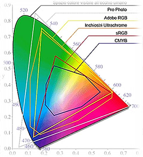(Spazio colore. – Diagramma di cromaticità)
Il primo
Gotcha (pubblicato nel 1973) è stato il primo videogioco della storia ad utilizzare i colori RGB. Successivamente uscì Galaxian (pubblicato nel 1978) che fù il primo gioco ad avere degli sprite multicolore. Fino ad allora gli unici colori visti all’interno di un gioco venivano prodotti utilizzando fogli di cellophane e sfondi di cartone.
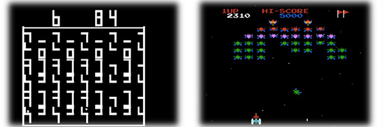(Immagini di gioco. – Gotcha (sinistra) e Galaxian (destra)
Perchè è importante
Nei videogame il colore viene da sempre utilizzato a scopo funzionale, per identificare gli elementi di gioco e per aiutare il giocatore a capire dove andare, chi attaccare e cosa prendere. Si tratta infatti, di uno strumento che in base al valore, alla tonalità e alla saturazione è capace di stimolare la sensibilità del giocatore e di creare, in lui, particolari stati d’animo. In un gioco, la stessa scena può trasmettere diverse sensazioni a seconda della gradazione di colore con cui è formata. Solitamente questa tecnica (ripresa dal cinema) è utilizzata per cambiare lo stato d’umore del giocatore, ed inoltre è possibile utilizzarla anche per ridurre l’impatto emotivo derivante dalla medesima scena.
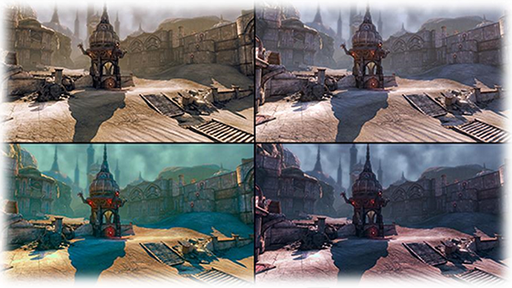(Stessa scena, con diversa gradazione di colore. – Unreal Engine)
Riconoscibilità
Per rendere immediatamente riconoscibile un gioco, il colore gioca un ruolo fondamentale. Possiamo citare alcuni giochi sicuramente connessi ad un colore, come per esempio Portal con l’arancione e il blu, oppure, il rosso di Super Meat Boy, ma ce ne sarebbero tanti altri. Oltre a rendere il gioco riconoscibile, il colore può anche aiutare la connessione con il gruppo di giocatori a cui quest’ultimo è indirizzato; per esempio i colori brillanti sono utilizzati di più nei casual-game, mentre quelli con un colore che ha più sfumature sono più frequenti nei mastering-game.
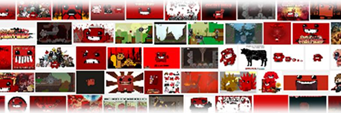(Prevalenza di colore con sfumature, gioco di mastering. – Super Meat Boy)
Codifica a colori
Molti giochi a stampo ruolistico, hanno una componente di ricompensa casuale molto alta (forzieri, bauli, etc..) che porta ad occupare il poco spazio disponibile, nell’inventario o deposito del giocatore, per collezionare questi oggetti. Per aiutare il giocatore a capire quali sono gli oggetti più preziosi, quindi non facendogli confrontare ogni singolo oggetto, viene creata una codifica a colori per questi elementi, che danno una rappresentazione visiva rapida del loro effettivo valore e/o rarità. La scala di colore, usata in questi giochi, è rimasta abbastanza costante ed invariata nel tempo. In generale il grigio ed il bianco indicano gli articoli di basso valore, il verde e il blu indicano quelli con un valore medio, ed infine quelli con il colore giallo, viola o arancione vengono usati per indicare gli oggetti più rari. Per fare un esempio di tutto ciò, prendiamo in esame l’MMO per antonomasia World of Warcraft, che divide i suoi oggetti in: “povero” quelli di colore grigio, “comune” quelli di colore bianco, “non comune” quelli di colore verde, “epico” quelli di colore viola, “leggendario” quelli di colore arancione, “cimelio” quelli di colore grigio.
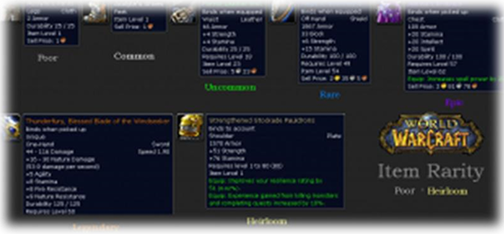(Gerarchia di rarità degli oggetti. – World of Warcraft)
Progressione
Il colore, all’interno di un videogioco, può anche contribuire a creare nel giocatore un senso di progressione, una sensazione di cambiamento sia del tempo che dello spazio. In Journey, per esempio, il cambiamento di umore del giocatore va di pari passo con quello della mutazione del colore. Un altro esempio che possiamo fare è quello di Geometry Dash, infatti gli sfondi sono la progressione dei colori dell’arcobaleno, il cui scopo è quello di distinguere ogni livello da un altro.
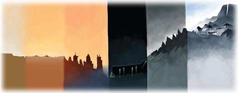(Progressione dei livelli. - Journey)
Gerarchia visiva
Il colore funge anche da gerarchia visiva. Gli elementi all’interno di una scena di un gioco, costituiscono una gerarchia naturale di importanza. Ad esempio, il giocatore è seguito dai nemici, seguiti a loro volta da oggetti interativi che sono seguiti anch’essi da elementi di sfondo. Il colore può aiutare a rendere questa gerarchia visibilmente chiara. Sia nella pittura che nel cinema, questo principio è utilizzato per far focalizzare lo spettatore su ciò che è importante. Nelle opere interattive, questo processo è ancora più importante, perché aiuta la figura del giocatore a capire cosa fare. Allacciandoci a questo discorso, possiamo dire che il colore diventa anche linguaggio narrativo. Per spiegare bene questo concetto è bene fare un esempio, prendendo in esame un videogame, Limbo. In questo gioco, in cui dialoghi e suoni sono ridotti all’osso, il colore riesce a prendere le paure del protagonista e plasmarle nel giocatore, tramite una sensazione di angoscia. Questo è dovuto alle atmosfere, rese particolari e grandiose dalla scelta cromatica incentrata esclusivamente su scale di neri e grigi, che riescono a dipingere l’incubo oscuro e inquietante del piccolo protagonista, un bambino che si ritrova ad attraversare un mondo privo di colore per ritrovare la sua sorellina scomparsa.
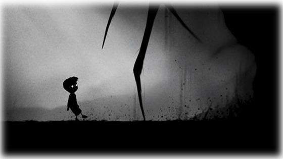(Scena di gioco. - Limbo)
Identificatore e significante
All’interno dei videogiochi, il colore svolge due funzioni molto importanti, quella di identificatore e quella di significante. Questi due modi di utilizzare il colore servono ad identificare elementi diversi di sistema, che avvisino il giocatore delle determinate proprietà degli elementi in questione. Gli identificatori di colore (noti anche come glifi) sono utilizzati per raggruppare elementi di gioco separati, come per esempio, i personaggi di gioco all’interno di una specifica area. I significanti invece, vengono utilizzati per comunicare le proprietà di un elemento (come una sezione del terreno o uno specifico oggetto) al giocatore. Il colore dell’elemento o dell’area di gioco, comunica se sia possibile o meno interagire con quell’oggetto. Prendiamo ad esempio Mirrors Edge’s, nel quale, nella modalità corridore, gli oggetti con la quale possiamo interagire sono evidenziati di rosso.
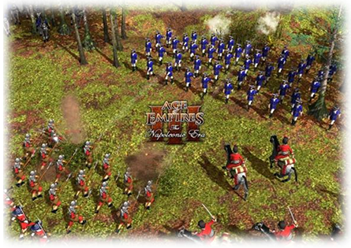(Identificatore delle fazioni. – Age Of Empires: T.N.E)
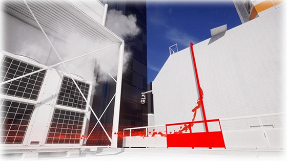(Significante nell’area di gioco. – Mirrors Edge’s)
Variazione del colore
Un’altra tecnica importante è quella della variazione del colore. Nei giochi astratti, i livelli tendono tutti ad assomigliarsi gli uni con gli altri, ed è quindi facile per questi giochi perdere profondità e quindi possono venire sottovalutati. Un metodo economico (sia a livello di costi che di tempo) è quello di far avvenire un cambiamento del colore di sfondo tra i livelli, per rendere quest’ultimi più distinti a livello visivo e dare al giocatore un senso più ampio di varietà e profondità del gioco. Inoltre i cambiamenti di colore possono essere utilizzati anche per ottenere un maggior numero di contenuti.
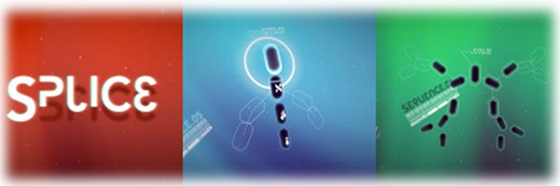(Colori di sfondo differenti. – Splice)
Il Pallet Swapping
Esistono alcune vecchie tecniche per aumentare il numero dei colori che percepiamo, come Il Pallet Swapping o il Dithering. Il Pallet Swapping è un metodo che veniva utilizzato per aumentare il numero di nemici ed oggetti di gioco quando lo spazio era ancora un problema. Questa tecnica (il Pallet Swapping) è stata utilizzata per aumentare il contenuto artistico nei giochi a 8-bit e 16-bit, per ridurre la parte di lavoro più intenso della creazione di uno sprite in 2D. Un semplice metodo utilizzato per aumentare la varietà di personaggi e oggetti di era quello di riutilizzare lo stesso sprite ma con una tavolozza di colori differente. Questa tecnica è spesso utilizzata anche quando ha la funzione di identificatore.
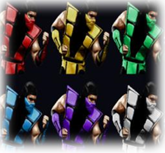(Esempio di Pallet Swapping. – Mortal Kombat)
Il Dithering
Il Dithering, invece, è una tecnica che veniva utilizzata per aumentare apparentemente il numero di colori tramite l’aggiunta di sottili strisce ad incastro di due colori diversi. Questa tecnica consente: di creare nuovi colori che non sono disponibili nella gamma di colori dell’hardware che utilizziamo, di ottenere un numero più ampio di colori, ed infine, consente di dare l’apparenza di un effetto di trasparenza per i sistemi che non supportano questa caratteristica.
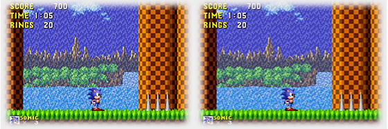(Esempio di Dithering. – Sonic The Hedgehogs)
Conclusione
In conclusione, possiamo dire, che il colore svolge un ruolo fondamentale nello sviluppo di un videogioco, sia dal punto di vista stilistico sia da quello funzionale. Quindi non è azzardato dire che l’evoluzione dei videogiochi va di pari passo con l’evoluzione tecnologica, che è in grado di sfruttare una gamma sempre più ampia di colori, consentendo così agli sviluppatori di raggiungere un risultato che si avvicina sempre di più al realismo.